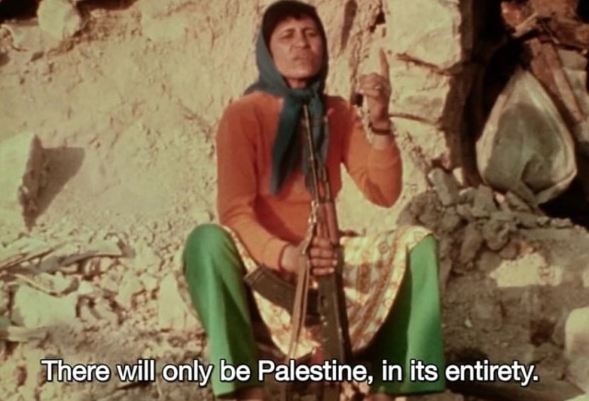

sessão 1
palestinian women, jocelyne saab
28 de outubro, 2025 – 20:00h
Para a nossa primeira sessão iremos ver e discutir o filme Palestinian Women, que centra as mulheres da palestina, que ganham aqui voz através de Jocelyne Saab. O filme foi encomendado pela Antenne 2 (França), mas foi censurado ainda na fase de edição e nunca chegou a ser exibido. Esta cópia foi especialmente produzida para esta retrospetiva pelo centro de conservação da Cinemateca Portuguesa.
